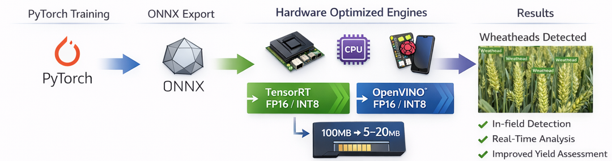

Performance tuning, INT8/FP16 quantization, ONNX, TensorRT, and OpenVINO pipelines for real-time deployment on low-cost hardware and GPU systems. Optimizing AI models for speed, efficiency, and real-world offline deployment.

Using the wheat head dataset to demonstrate AI models fully optimized for edge devices. Focused on model selection, quantization, hardware-aware deployment, and real-world inference.
Dataset → Training (PyTorch) → Export (ONNX) → Optimization (TensorRT / OpenVINO / INT8) → Edge Device → Live Inference → Output (Counts / API / Dashboard)
PyTorch → ONNX → TensorRT (Jetson) / OpenVINO (Intel CPU) → FP16 → INT8 Metrics tracked at each stage: Model size, latency, FPS, mAP drop, MAE change.
| Model | mAP | PyTorch CPU FPS | ONNX CPU FPS | ONNX CUDA FP32 | TensorRT FP16 | TensorRT INT8 |
|---|---|---|---|---|---|---|
| YOLO12s | 0.935 | 6.1 | 10.14 | 51.88 | — | — |
| YOLO12n | 0.928 | 12.1 | 32.62 | 80 | — | — |
| YOLO11s | 0.923 | 7.14 | 10.68 | 64.36 | — | — |
| YOLO11n | 0.915 | 13.0 | 30.39 | 91.07 | — | — |
| YOLO26n | 0.912 | 17.5 | 35.56 | 102.16 | — | — |
| YOLO26s | 0.921 | 7.7 | 12.61 | 62.57 | — | — |
PyTorch, ONNX Runtime, TensorRT, OpenVINO, CUDA, Flutter/React Native for frontend demo